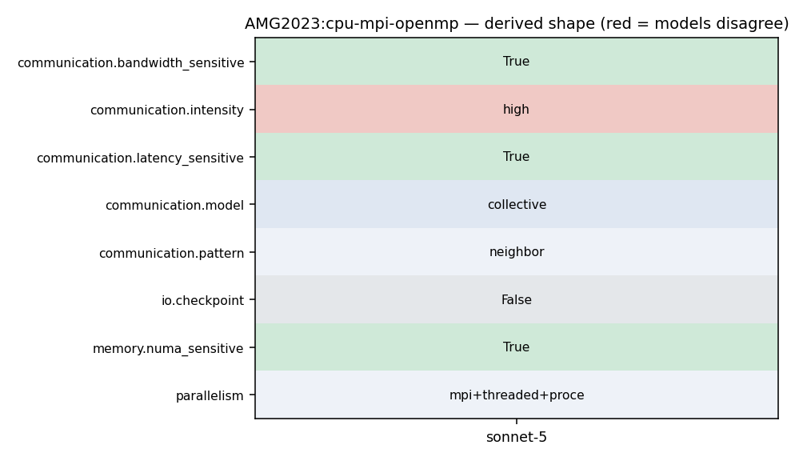

mpirun -np <P*Q*R> ./amg -P <px> <py> <pz> -n <nx> <ny> <nz>
2 3 # General description: 4 5 AMG2023 is a parallel algebraic multigrid solver for linear systems arising from 6 problems on unstructured grids. The driver provided here builds linear 7 systems for various 3-dimensional problems. It requires an installation of 8 hypre-2.27.0 or higher.
7 systems for various 3-dimensional problems. It requires an installation of 8 hypre-2.27.0 or higher. 9 10 AMG2023 is written in C. It is a SPMD code which uses MPI and OpenMP threading within MPI tasks. 11 Parallelism is achieved by data decomposition, which is here achieved by simply subdividing 12 the grid into logical P x Q x R (in 3D) chunks of equal size. 13 It can also be used on NVIDIA, AMD, and Intel GPUs via CUDA, HIP, and SYCL.
2 3 # General description: 4 5 AMG2023 is a parallel algebraic multigrid solver for linear systems arising from 6 problems on unstructured grids. The driver provided here builds linear 7 systems for various 3-dimensional problems. It requires an installation of 8 hypre-2.27.0 or higher.
7 systems for various 3-dimensional problems. It requires an installation of 8 hypre-2.27.0 or higher. 9 10 AMG2023 is written in C. It is a SPMD code which uses MPI and OpenMP threading within MPI tasks. 11 Parallelism is achieved by data decomposition, which is here achieved by simply subdividing 12 the grid into logical P x Q x R (in 3D) chunks of equal size. 13 It can also be used on NVIDIA, AMD, and Intel GPUs via CUDA, HIP, and SYCL.
180 181 hypre_MPI_Init(&argc, &argv); 182 183 hypre_MPI_Comm_size(comm, &num_procs ); 184 hypre_MPI_Comm_rank(comm, &myid ); 185 186 #ifdef USE_CALIPER
374 #endif 375 376 hypre_EndTiming(time_index); 377 hypre_GetTiming("Hypre init times", &wall_time, comm); 378 hypre_FinalizeTiming(time_index); 379 hypre_ClearTiming(); 380 #ifdef USE_CALIPER
7 systems for various 3-dimensional problems. It requires an installation of 8 hypre-2.27.0 or higher. 9 10 AMG2023 is written in C. It is a SPMD code which uses MPI and OpenMP threading within MPI tasks. 11 Parallelism is achieved by data decomposition, which is here achieved by simply subdividing 12 the grid into logical P x Q x R (in 3D) chunks of equal size. 13 It can also be used on NVIDIA, AMD, and Intel GPUs via CUDA, HIP, and SYCL.
8 hypre-2.27.0 or higher. 9 10 AMG2023 is written in C. It is a SPMD code which uses MPI and OpenMP threading within MPI tasks. 11 Parallelism is achieved by data decomposition, which is here achieved by simply subdividing 12 the grid into logical P x Q x R (in 3D) chunks of equal size. 13 It can also be used on NVIDIA, AMD, and Intel GPUs via CUDA, HIP, and SYCL. 14
1 /****************************************************************************** 2 * Copyright (c) 1998 Lawrence Livermore National Security, LLC and other 3 * HYPRE Project Developers. See the top-level COPYRIGHT file for details. 4 *
1028 Cy = (HYPRE_BigInt) nxy * ((HYPRE_BigInt) P * nz - 1); 1029 Cz = (HYPRE_BigInt) local_size * ((HYPRE_BigInt) P * Q - 1); 1030 #ifdef HYPRE_USING_OPENMP 1031 #pragma omp parallel 1032 #endif 1033 { 1034 HYPRE_BigInt ix, iy, iz;
1039 HYPRE_Int num_threads, my_thread; 1040 HYPRE_Int size, rest; 1041 HYPRE_BigInt new_row_index; 1042 num_threads = hypre_NumActiveThreads(); 1043 my_thread = hypre_GetThreadNum(); 1044 size = nz / num_threads; 1045 rest = nz - size * num_threads;
18 add_definitions(-DAMG_CMAKE_BUILD=1) 19 set(CMAKE_INSTALL_RPATH_USE_LINK_PATH TRUE) 20 21 option(AMG_WITH_MPI "Use MPI" TRUE) 22 option(AMG_WITH_CUDA "Use CUDA" FALSE) 23 option(AMG_WITH_HIP "Use HIP" FALSE) 24 option(AMG_WITH_CALIPER "Enable Caliper" FALSE)
22 option(AMG_WITH_CUDA "Use CUDA" FALSE) 23 option(AMG_WITH_HIP "Use HIP" FALSE) 24 option(AMG_WITH_CALIPER "Enable Caliper" FALSE) 25 option(AMG_WITH_OMP "Enable OpenMP" FALSE) 26 option(AMG_WITH_UMPIRE "Enable Umpire support (requires Umpire support in HYPRE)" FALSE) 27 28 find_library(HYPRE_LIBRARIES
178 * Initialize MPI 179 *-----------------------------------------------------------*/ 180 181 hypre_MPI_Init(&argc, &argv); 182 183 hypre_MPI_Comm_size(comm, &num_procs ); 184 hypre_MPI_Comm_rank(comm, &myid );
1028 Cy = (HYPRE_BigInt) nxy * ((HYPRE_BigInt) P * nz - 1); 1029 Cz = (HYPRE_BigInt) local_size * ((HYPRE_BigInt) P * Q - 1); 1030 #ifdef HYPRE_USING_OPENMP 1031 #pragma omp parallel 1032 #endif 1033 { 1034 HYPRE_BigInt ix, iy, iz;